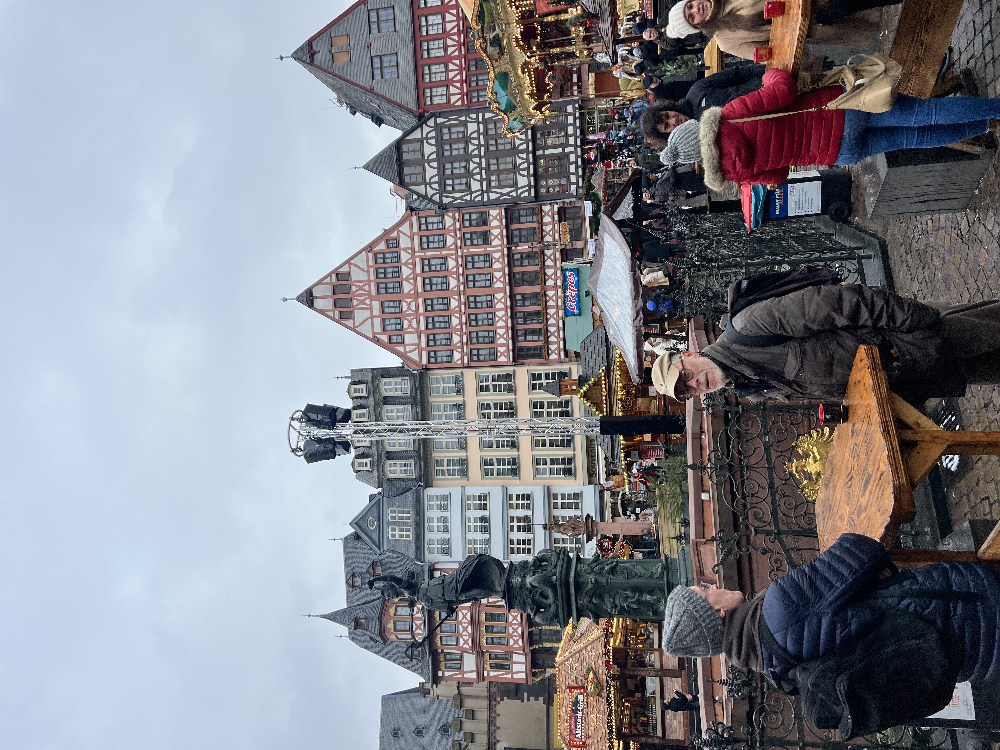
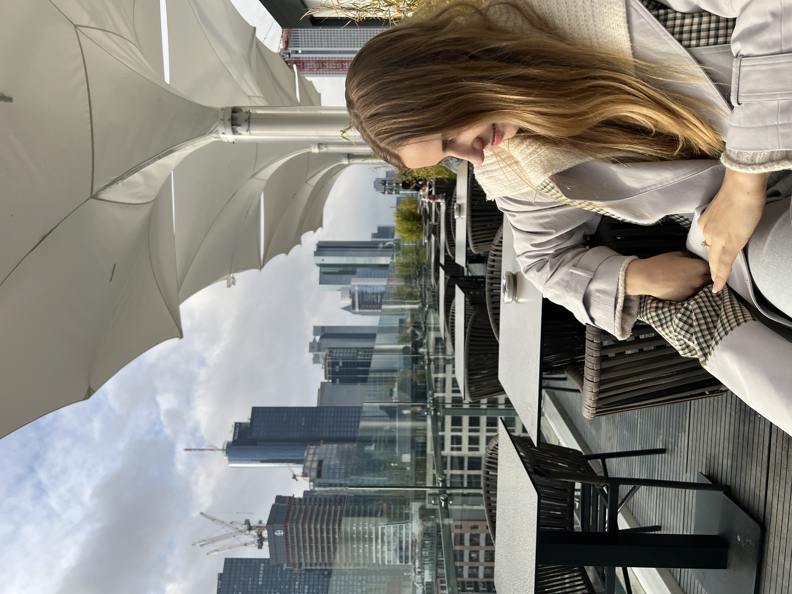

Germany is a country that offers a unique blend of history, culture, and natural beauty. From the bustling cities like Berlin and Munich, to the idyllic countryside and small towns, there is something for every traveler in Germany.
One of the highlights of traveling to Germany is exploring its rich cultural heritage. The country is home to numerous world-famous museums and galleries, such as the Pergamon Museum and the Alte Nationalgalerie in Berlin, and the Bavarian National Museum in Munich. Visitors can also experience the history of the country by visiting historical landmarks and monuments, such as the Brandenburg Gate and the Berlin Wall Memorial. 
Another reason why traveling to Germany can be fulfilling is the natural beauty of the country. The country is known for its diverse landscapes, from the stunning mountain ranges in the Bavarian Alps to the rolling hills of the Rhine Valley and the beautiful beaches along the Baltic coast. This makes Germany a perfect destination for outdoor activities like hiking, cycling, and water sports.
Finally, the friendly and welcoming nature of the German people further enhances the travel experience. From the lively beer gardens and cafes in the cities, to the cozy inns and guesthouses in the countryside, travelers can easily immerse themselves in local culture and enjoy the hospitality of the German people. 
In conclusion, traveling to Germany is a fulfilling experience that offers a unique blend of history, culture, and natural beauty, and is a must-visit destination for anyone looking for a memorable trip.